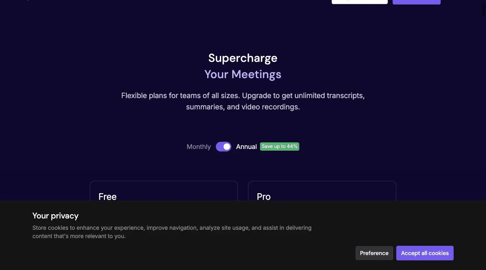
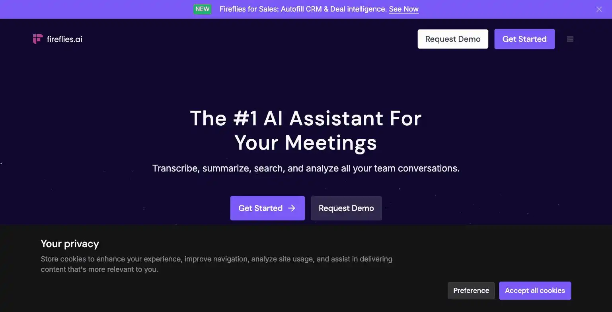

Fireflies.ai
Fireflies.ai is an AI meeting transcription tool with unlimited transcription minutes on every tier, including free. Ranked #2 on Solos Gems (8.4/10) and rated Best Value, it's best for solopreneurs who want unlimited transcription without jumping to a paid Pro tier, unlike Otter.ai's 300-minute free cap.
Fireflies.ai will transcribe your meetings forever for free, which is either extremely generous or a business model that needs a stern talking to. Either way, future you doing a keyword search across six months of transcripts at 11pm will be grateful.
- Value for price9/10
- Capability8/10
- Ease of use8.5/10
- Trial safety9.5/10

Fireflies covers the same core job as Otter.ai, joining calls, transcribing them, and summarizing the key points, but structures its pricing differently: transcription itself is unlimited on every tier, including free, and what you pay for is storage, automation, and analytics on top.

The transcript view above shows Fireflies turning a call directly into structured sales notes and launching AI Apps against the transcript in place. Otter focuses more narrowly on transcription and summary, without this level of built-in action-taking.
Example from fireflies.ai. Not independently tested by Solos Gems.Pricing breakdown
- Free: $0; unlimited transcription and unlimited AI summaries, 20 shared AI credits
- Pro: $10/seat/month billed annually ($18/month monthly); adds video recording, downloads, AI Skills, 20 AI credits
- Business: $19/seat/month billed annually ($29/month monthly); team analytics, unlimited storage, 30 AI credits
- Enterprise: $39/seat/month, annual only; compliance and admin controls, 50 AI credits
Transcription in 100+ languages is available across all tiers. The AI credit pools listed are a one-time shared allowance rather than a monthly refresh: worth confirming current behavior directly, since usage-based AI pricing structures change often across this category.
Fireflies vs. Otter, for a solo operator
The core trade-off: Otter's free tier caps you at 300 transcription minutes/month with a 30-minute-per-call limit, while Fireflies' free tier has no transcription cap at all, the free-tier limits are on AI credits and features like video recording, not raw transcription volume. If most of your calls are simple audio transcription without needing video capture, Fireflies' free tier goes further before you need to pay anything.
Pros
- Unlimited transcription minutes even on the free plan, no monthly minute-counting
- Pro tier at $10/month (annual) undercuts Otter's equivalent tier
- AI Skills and summaries work the same regardless of paid tier
Cons
- Video recording and downloads are locked behind Pro, even though transcription is free
- AI credit pools appear to be a limited one-time allowance rather than a recurring monthly grant: check current terms
- Storage limits on Free/Pro can bind before transcription minutes ever would
See how this compares to Otter.ai →